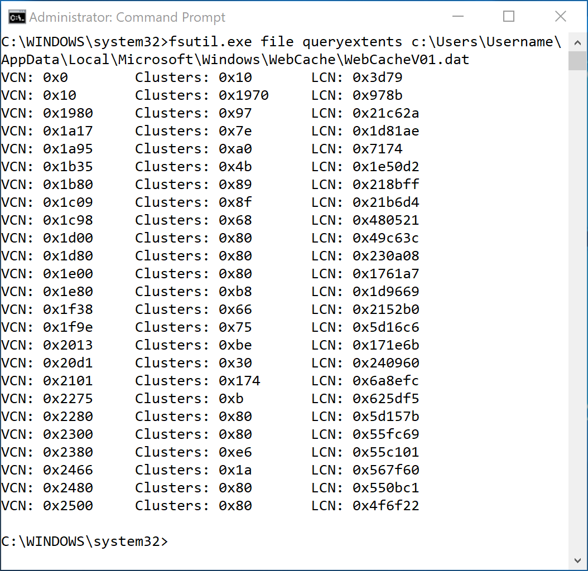

ADFIRWMC - 2. Remote Acquisition of Windows Artifacts
Some folks reading this are convinced that Incident Response is all done through Endpoint Detection and Response solutions and in 2018 no one drops collection scripts to gather artifacts for analysis. Those people are wrong.
The first thing you should know is you will run into problems. Even when your collection tool is working perfectly; network connections drop, hard drives run out of room, antivirus and data loss prevention software will freak out… this is going to happen. Embrace it.
This chapter is going to cover as many of the lessons learned as I can think of.
Issues with Tools for Remote File Acquisition
This can quickly get religious but I am not a fan of most commercial tools. Many do WAY too much stuff I don’t need or want for my OCD to handle. I am not going to bad mouth any particular vendor but there are a lot of solutions that just don’t work for my exact needs.
Things I have found annoying about collection tools:
- Some tools require special dongles which is often not practical with modern global enterprises.
- Some use netcat like functionality to talk directly from your workstation to target which triggers NIDS and is blocked by NIPS.
- Some won’t copy or even find some files on the target because they are locked by the OS or a third party tool like AV or DLP.
- Some free tools get flagged by AV because they are not signed or what they are written in.
- Some tools take too long and then produce too little.
- Some tools are primarily geared for Law Enforcement and don’t cater to the enterprise teams that will probably never testify in court.
- Most are WAY overpriced for what they offer.
Enough of my complaining. After a little science, I will explain two completely free tools you can use to carve Windows artifacts.
The Underlying Mechanics of Copying Locked Files on Windows
Before we discuss tools and examples, an understanding of the mechanics of the NTFS filesystem is helpful to ensure you can adapt and overcome when various things get in between you and your artifacts. Here is a piece of DFIRfu using completely native windows commands. Admittedly, this is more DF than IR and I know it is a lot of hexadecimal but stick with me…

Breakdown
fsutil.exe fsinfo ntfsInfo c:- This command shows us a bunch of useful information for how data is stored on this Volume but all we need for now is the Bytes per Cluster: 4096.
- We could have used something like this:
wmic volume where (name="c:\\") get blocksize - This tells us that the file system allocates space to files in chunks of 4096 bytes. Even if the file is smaller, it gets the whole 4K to itself.
fsutil.exe file queryextents c:\$MFT- This command shows use the clusters allocated to the $MFT. I pick on the $MFT a lot in my examples for two reasons : it contains almost all of the file system information on the system and it is not directly accessible through the operating system.
- This command outputs three columns of information:
- VCN: Virtual Cluster Numbers are used to sequence chunks of allocated data kinda like numbered puzzle pieces.
- Clusters: This is the number of contiguous Clusters allocated per Data Run.
- LCN: Logical Cluster Numbers are basically used as addresses. This run of contiguous data begins at X number of clusters from the beginning of the volume.
echo Size of $MFT in Bytes: && set /a (0xC820 + 0x4720) * 4096- This is just an example of how to do math on the Windows command line.
set /acan be used for sorts of fun stuff like converting hex to decimal and arithmetic.- Here I am adding the number of clusters from the first data run and second data run to determine the total number of clusters allocated to the $MFT. Since we know the clusters are 4096 bytes large, we multiple to determine the number of bytes allocated to the $MFT.
dir "\\vmware-host\Shared Folders\Evidence"- Here I am just showing you that the $MFT we collected from the previous examples using RawCopy is in fact the same size as the crazy math we just did.
Here is another way to look at that information:
That $MFT only has two but it is common for larger files to have many data runs:

This WebCacheV01.dat file has 25 runs spread out all over the volume.
The Point
To access locked files on a live Windows system, your acquisition tool needs to:
- Determine what physical clusters have been allocated for that file. This is stored in terms of LCN and number of clusters (inside the $MFT as it just so happens, but we will cover that later).
- Open the Volume for direct read access.
- Seek to the offset of the LCN on disk and read the numbers of clusters specified. Repeat as needed for all Data Runs.
- Write the collected information to an output file in the sequence specified by the VCNs.
Piece of cake right? Well the first 3 steps can trip up tools for one reason or another.
Building a Toolkit for Live File Collection:
I wish I could point you to a single perfect free tool that does exactly what you need but sadly, I can’t recommend one that checks all the blocks. So, since this is a course designed to expand your knowledge and experience, let’s just build one from scratch(ish)!
Lets display a variety of PowerShell fucntionality by using fcat from SleuthKit to make a collection script:
#1. Timestamps are a great way to make unique folder names with context.
$timestamp = (get-date).ToString('yyyy-MM-dd-h-m-s')
#2. Array of Files to Collect
$filestocollect = @()
#3. NTFS Files
$filestocollect += 'c:\$MFT'
$filestocollect += 'c:\$LogFile'
$filestocollect += 'c:\$Extend\$USNJrnl:$J'
#4. Array for Regex Signatures for Files of Interest
$filesigs = @()
#User Registry Files
$filesigs += '^c:\\Users\\.*\\ntuser.dat$'
$filesigs += '^c:\\Users\\.*\\AppData\\Local\\Microsoft\\Windows\\usrclass.dat$'
#System Registry Files
$filesigs += '^c:\\Windows\\System32\\config\\.*'
#Event Logs
$filesigs += '^c:\\Windows\\System32\\winevt\\Logs\\.*.evtx$'
$filestocollect += gci -Path C:\Users,C:\Windows -Recurse -Force -File -ErrorAction SilentlyContinue |
Where-Object { $_.FullName -imatch $($filesigs -join "|") }| % { $_.FullName }
#5. Collect Files of Interest
foreach($file in $filestocollect){
#6. Bastardized Multiprocessing. Counts the number of fcats running and sleep if it is more than 10.
while(@(Get-Process fcat -ErrorAction SilentlyContinue).Count -ge 10){Start-Sleep -Seconds 5}
#7. Manipulating the path to get what we need
$unixname = $file -replace "c:","" -replace "\\","/"
$outfile = $('{0}\\{1}' -f $timestamp,$file -replace ':','')
$outdir = $outfile.Substring(0,$outfile.LastIndexOf("\"))
#8. Building the command string
$cmdstr = ""
$cmdstr += "/c mkdir $('{0}{1}{0}' -f [char]34, $outdir) & "
$cmdstr += "$('{0}\\{1}' -f $pwd,"fcat.exe") -h -f ntfs $('{0}{1}{0}' -f [char]34, $unixname) \\.\c: > "
$cmdstr += "$('{0}{1}{0}' -f [char]34, $outfile) "
#Run
Start-Process cmd.exe -ArgumentList $cmdstr -WindowStyle Hidden
Start-Sleep -Seconds 1
}
#9. Wait until all of the fcats are done
while(@(Get-Process fcat -ErrorAction SilentlyContinue).Count){
write-host "Collectors are still running..."
Start-Sleep -Seconds 30
}
write-host "Zipping..."
#10. Zip it real good.
Add-Type -assembly "system.io.compression.filesystem"
[io.compression.zipfile]::CreateFromDirectory($('{0}\\{1}' -f $pwd,$timestamp), $('{0}\\{1}.zip' -f $pwd,$timestamp))
write-host "Done"
This is the platform we will add use and augment throughout the rest of the course. It’s free and it works. Strap in because the breakdown on this is going to be brutal.
Breakdown
-
$timestamp = (get-date).ToString('yyyy-MM-dd-h-m-s')- This creates a string of the current time in Year-Month-Day-Hour-Minute-Second format. i.e. “2018-03-08-5-2-12”
- This is helpful for creating unique folder names that are organized and easy to sort
-
$filestocollect = @() -
$filestocollect += 'c:\$MFT'- Some files are a part of the filesystem but not direct accessible via a directory listing so we add their paths manually to $filestocollect array
-
$filesigs = @()- This is going to be an array of Regular Expressions “RegEx” that we use to find files of interest on the target system.
-
$filesigs += '^c:\\Users\\.*\\ntuser.dat$'- This RegEx allows us to collect registry files from all of the profiles on a system without having to explictedly know the path for each
- We are using double back slashes to “escape” the single blackslash. If we didn’t, it would be interpreted as a RegEx operator.
-
$filestocollect += gci -Path C:\\Users,C:\\Windows -Recurse -Force -File -ErrorAction SilentlyContinue | Where-Object { $.FullName -imatch $($filesigs -join "|") }| % { $.FullName }- Here we are using the gci alias for the PowerShell command Get-ChildItem which is a fancy command that can enumerate through a directory listing among other things.
- We specify 2 directories for the -Path argument to define the scope of our search.
- -Recurse continues the seach throughout all of the subdirectories.
- -Force adds hidden files to the search and levitates rocks.
- -File is used to exclude directories from my results. This is actually important to the mechanincs of the rest of the script.
- I specified SilentlyContinue for -ErrorAction because as it tries to get directory for every file in the C:\Windows folder, there are Access Denied Errors on files I didn’t ask for and I don’t want to see them.
- We redirect the output of the gci command into the Where-Object to filter our results to compare the FullName of the file to our array of RegEx $filesigs. $filesigs is an array of strings until use -Join to merge each signature together with a pipe which acts as an OR statement in RegEx. “Signature 1 OR Signature 2 OR …”
- Finally, we redirect THAT output and grab the Fullname of the file that matches one of our signatures and add it to the $filestocollect array.
-
foreach($file in $filestocollect){- This is a For loop in PowerShell. We take the array and iterate across each element until we run out.
-
while(@(Get-Process fcat -ErrorAction SilentlyContinue).Count -ge 10){Start-Sleep -Seconds 5}- This is a While loop in PowerShell. This statement will keep going until the condition is not True. This statement is counting the number of processes containing “fcat” and if it is greater than or equal to 10; it will sleep for 5 seconds and check again. This is being used to keep the number of fcat collectors to a reasonable amount. Is this a perfect solution? No. This is more “Tactical” Multiprocessing, meaning I want more than one instance running at a time but I don’t care enough to code true multiprocessing into the script. High yield, low drag. The process count and sleep timer can be adjusted to the desired amount of noise you want the target systems fan to make.
-
$unixname = $file -replace "c:","" -replace "\\","/"- So this is a bit kludgy but fcat works with unix file paths so instead of C:\$MFT, we need to feed it /$MFT.
-
$outfile = $('{0}\\{1}' -f $timestamp,$file -replace ':','')- fcat literally just prints a files contents to screen and has no other frills like saving the file to another location so it makes us do a little work.
- This line of code is responsible for creating the folder structure in the collection folder that represents where the file came from on the target.
C:\Users\Username\ntuser.datgets saved to2018-03-08-5-2-12\c\Users\Username\ntuser.dat
-
$outdir = $outfile.Substring(0,$outfile.LastIndexOf("\"))- In order to store the ntuser.dat file in the
2018-03-08-5-2-12\c\Users\Usernamefolder, we need to create it. - This line takes a substring of the $outfile path from index 0 (the begining) to the index of the last backslash argo the parent folder of the file.
- Are there other commands to get the parent folder of a file? Yes, but they don’t work on files the OS can’t see like c:\$Extend\$USNJrnl:$J and I imagine this is faster anyways.
- In order to store the ntuser.dat file in the
- Building the command string is wonky looking but there are reasons
- Example:
mkdir "2018-03-08-5-2-12\c\Users\Username\" & fcat.exe -h -f NTFS "/Users/Username/ntuser.dat" \\.\c: > "2018-03-08-5-2-12\c\Users\Username\ntuser.dat" - This is pretty simple but gets complicated because all the paths need to be encapsulated with quotes because some paths might have spaces in them.
$('{0}{1}{0}' -f [char]34, $outdir)is an example of creating a string from other variables. I am using [char]34 because it is the cleanest method of concatenating quotes I have found. The backtick method didn’t survive accoss the cmd interpreter. This method puts a “ before and after the $outdir.- Fun fact: mkdir will make recursive folders if you ask it.
- For fcat, I used -h to knock down the size of the sparse files we collect. I will cover that later. -f specifies the NTFS file system.
- We are using the > to redirect the output of fcat into a file.
- Example:
-
Start-Process cmd.exe -ArgumentList $cmdstr -WindowStyle Hidden- Fire off the procress in a hidden window.
-
while(@(Get-Process fcat -ErrorAction SilentlyContinue).Count){Start-Sleep -Seconds 30}Since we have a few collectors going at a the same time, we need to want until they are all finished before zipping up the collection. I wrote it to check and then wait 30 secs which seems to work pretty well but ymmv.
- The rest of the code just makes a zip file by compressing the 2018-03-08-5-2-12 folder and saving to 2018-03-08-5-2-12.zip
The folder structure ends up looking like this:
Securely Copying Files
We will dive more into this later but the title of this chapter is REMOTE file aquisition right? Since this zip file was created locally, we need a secure way to copy it from the remote machine. This is a bit of a cheat code BUT all of PsExec’s network communications are encrypted to prevent admin credentials being sniffed over the network traffic. We can use this to send files over a secure channel with something like this:
PsExec \\RemoteMachine cmd /c type C:\temp\2018-03-08-5-2-12.zip 2>nul 1> 2018-03-08-5-2-12-RemoteMachine.zip
This is a cheap method of secure transport without having to set up network shares or netcat like direct TCP communication. I normally use PsExec on systems with my existing token but in the rare instances that I need to use a Username and Password it will add extra crap to the file. At the top of the file: and the bottom:
You can clip that off in PowerShell like this:
$PATH = "2018-03-08-5-2-12.zip"
$top = 10
$bottom = 2
$file = dir $PATH
$byteEncodedContent = [System.IO.File]::ReadAllBytes($file.FullName)
$truncatedByteEncodedContent = $byteEncodedContent[$top..($byteEncodedContent.Length - $bottom)]
Set-Content -value $truncatedByteEncodedContent -encoding byte -path "$($file.FullName)"